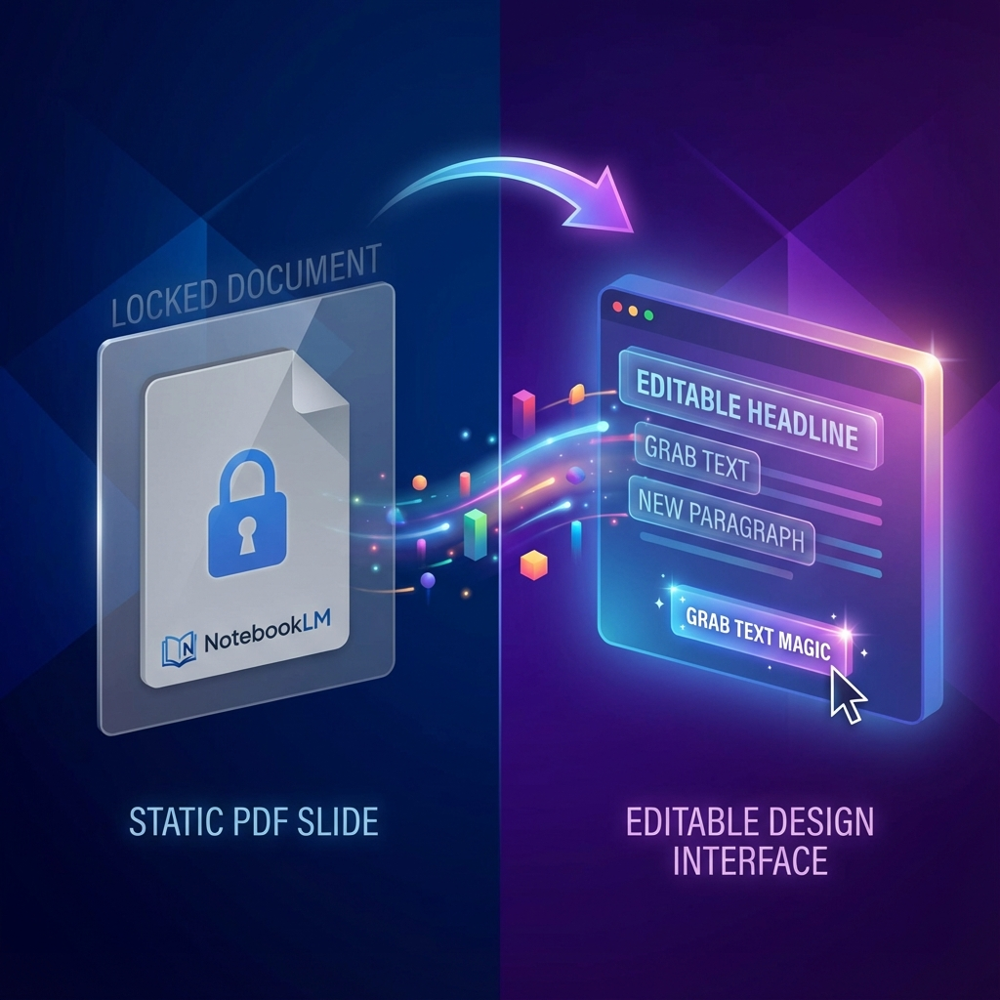
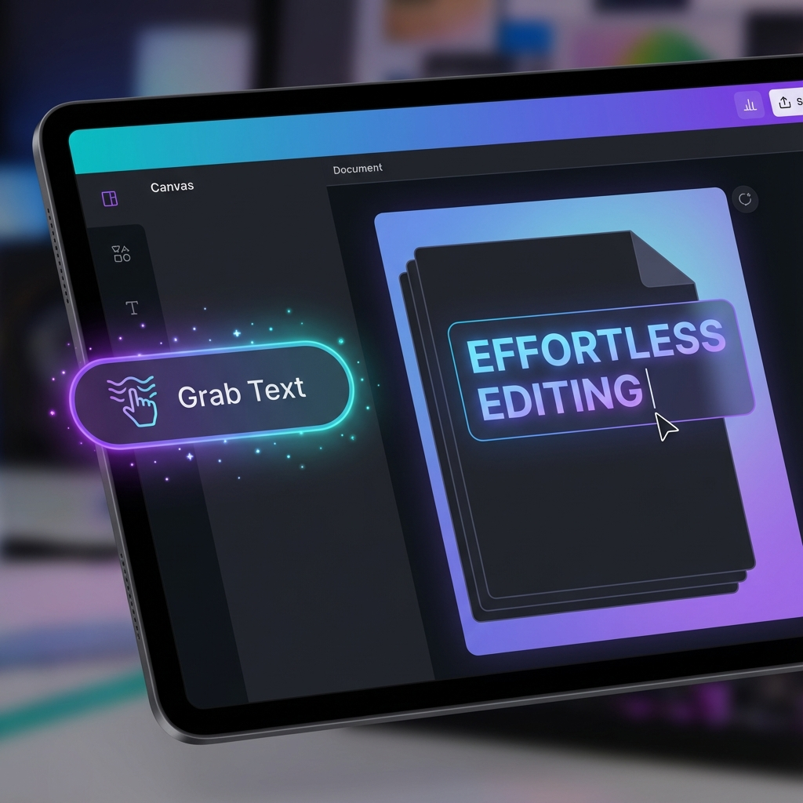

Vytvořili jste v NotebookLM perfektní prezentaci, ale po stažení zjišťujete, že text nejde upravit? Ukážeme vám trik, jak statické obrázky proměnit v plně editovatelné slidy.
Obsah je na jedničku, struktura dává smysl a jste připraveni ji předvést. Teď ji jen potřebujete doladit v PowerPointu nebo Google Slides. Nahrajete ji, otevřete a… narazíte na problém. Text nejde upravit. Každý snímek je jen statický obrázek a vy nemůžete změnit ani čárku.
Tato frustrující situace je častější, než si myslíte. Mnoho uživatelů se domnívá, že přímý převod z PDF na PPTX soubor automaticky zpřístupní text k úpravám. Realita je však jiná a skrývá se v ní nečekané, ale velmi účinné řešení, které vám ušetří hodiny marných pokusů. Klíč se nachází v nástroji, který možná již používáte – v Canvě.
1. Překvapení č. 1: Přímý převod vytvoří pouze needitovatelné obrázky
První a nejlogičtější krok, který většina z nás udělá, je nahrání PDF souboru z NotebookLM do Canvy a jeho okamžité stažení ve formátu PPTX nebo uložení na Google Drive. Tento postup se zdá být přímý a správný, ale vede k nečekanému zjištění. Výsledkem není plně editovatelná prezentace.
Proces totiž pouze vezme každou stránku vašeho PDF, převede ji na statický obrázek a ten vloží na samostatný snímek v PowerPointu nebo Google Slides. Text, nadpisy a odrážky jsou součástí tohoto obrázku a nelze s nimi manipulovat jako s běžným textovým polem.
"So you don't have the images or the file that's going to be editable what you have are images on top of the slides just like you have inside of Google Slides."
Pochopení tohoto mechanismu je zásadní. Ušetří vám čas a frustraci z pokusů o úpravu něčeho, co ze své podstaty upravit nejde. Skutečné řešení vyžaduje jiný, méně intuitivní přístup.
2. Překvapení č. 2: Skutečné řešení vyžaduje placenou verzi Canvy
Klíč k odemknutí textu a jeho zpřístupnění pro úpravy se neskrývá v samotném převodu formátů, ale v pokročilé funkci Canvy. Je však důležité vědět, že tato funkce je dostupná pouze pro uživatele placené verze Canva Pro.
Tato exkluzivní funkce se nachází v prostředí nazvaném Magic Studio. V uživatelském rozhraní Canvy jsou prémiové nástroje, které vyžadují verzi Pro, jasně označeny malou ikonou korunky. Pokud se tedy snažíte text na obrázku upravit a nedaří se vám to, pravděpodobně narážíte na limit bezplatné verze.
Ačkoliv to znamená nutnost investice, pro uživatele, kteří pravidelně pracují s prezentacemi z různých zdrojů, může předplatné Canva Pro představovat významnou úsporu času a zefektivnění celého pracovního postupu.
3. Klíčový trik: Jak použít funkci "Grab Text"
Jakmile máte přístup k Canva Pro, samotný proces je již překvapivě jednoduchý a rychlý. Postupujte podle těchto kroků a proměňte statický obrázek v plně editovatelný snímek:
- V Canvě klikněte na obrázek snímku, který chcete upravit.
- Po kliknutí na obrázek snímku se přímo u něj objeví kontextové menu. V tomto menu zvolte možnost 'Editovat fotografii'.
- Tento krok vás přenese do prostředí Magic Studio, kde vyberete funkci "Grab Text" (v české verzi může být označena například jako 'Zachytit text').
- Po kliknutí Canva analyzuje obrázek, identifikuje na něm text a automaticky jej převede na standardní, plně editovatelné textové pole.
Nyní můžete text libovolně měnit – například smazat slovo "digital" z nadpisu, opravit překlepy nebo doplnit nové informace.
Jako expert na digitální produktivitu bych rád přidal jeden tip týkající se profesní etiky. Ačkoliv nyní můžete upravit cokoliv, je dobrým zvykem ponechat na snímcích vodoznak NotebookLM nebo jinou formou uvést zdroj. Tím dáváte najevo transparentnost a respektujete původní nástroj, který vám pomohl obsah vytvořit.
Jakmile dokončíte všechny úpravy, je naprosto klíčové prezentaci znovu stáhnout jako soubor PPTX nebo ji opět uložit na váš Google Drive. Teprve tímto krokem uložíte finální, nyní již plně editovatelnou verzi souboru.
Od obrázku k editovatelnému mistrovskému dílu
Cesta k plně editovatelné prezentaci z NotebookLM nevede přes přímý export, ale vyžaduje chytrý mezikrok. Řešením je využití pokročilé funkce "Grab Text" v rámci Canva Pro, která dokáže extrahovat text ze statického obrázku a proměnit jej v upravitelný obsah.
Jaké další skryté funkce v nástrojích, které denně používáte, by vám mohly ušetřit hodiny práce a zjednodušit vaše workflow?